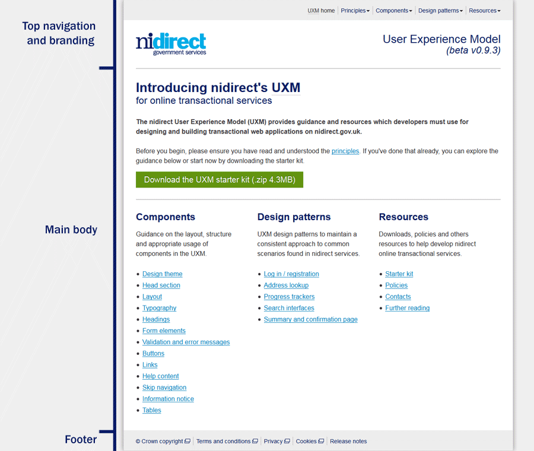
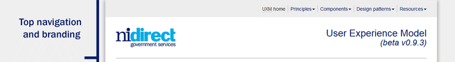
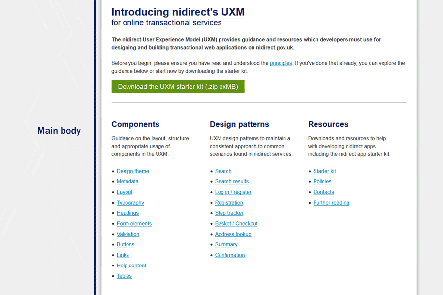

Components
This section outlines the layout, structure, visual appearance and other requirements for key components of nidirect online transactional services.
- Design theme
- Responsive layout
- Sections
- Typography
- Headings
- Form elements
- Validation and error messages
- Buttons
- Links
- Help content
- Skip navigation
- Information notice
- Tables
- Pagination
Design theme
- The current UI theme for nidirect is flat, square and minimal
- 3D design such as rounded corners, gradients and shadows should be avoided (except where presented in this guide)
Responsive layout
- Three main layouts for the UXM are currently available, dependent on the available width of the device/window:
- These breakpoints match the breakpoints used in the responsive Bootstrap v2.3.2 layout, with some exceptions:
- On Bootstrap the top navigation changes to a menu button when the screen width is less than 979px. On the UXM the top navigation changes to a menu button when the screen width is less than 767px. To achieve this please note that the breakpoint on 'bootstrap-responsive.css' was changed (see line 952).
- The '1200px and up' layout is not required and should be excluded. If there are strong reasons why a layout larger than 980px is required then you must liaise with the nidirect Transactional Services Manager.
- There is an additional minor breakpoint in the UXM (between 768px and 979px). The styling and layout adjustments made by this breakpoint are insignificant and therefore not detailed.
- The nidirect-responsive.css stylesheet should be positioned after the bootstrap-responsive.css stylesheet to apply correct inheritance
<link href="css/bootstrap-responsive.css" rel="stylesheet" type="text/css" media="screen, projection" />
...
<link href="css/nidirect-responsive.css" rel="stylesheet" type="text/css" media="screen, projection" /> - Resize your browser window to view each layout or refer to the key points below
- Displayed when the available screen width is 980px or greater
- The page canvas must be centered, be a maximum of 960px wide and have 30px left and right inner padding
- Tip - set the inner padding and width using relative units for a fluid transition between layouts
.content {
...
padding: 0 3.125% 32px 3.125%; /* 30px left and right padding @'large layout' */
width: 93.75%; /* 900 px @'large layout' */
} - The body background colour must be #F1F1F1
- Block level elements should left align to the nidirect logo, i.e. 30px inner padding
- The sides of the page canvas must present the following visual appearance
border-left: 1px solid #D3D3D3;
border-right: 1px solid #D3D3D3;
box-shadow: 0 0 12px #888888;
- Displayed when the available screen width is greater than 480px and less than 767px
@media (max-width: 767px) { ... - The top navigation changes to a menu button
- The nidirect logo is replaced with a smaller version in the top navigation bar
- This logo does not display the additional 'government services' text
- The font size of the service name is reduced
- Inline validation is repositioned to below the input
- Items in the footer are positioned in two columns
- Displayed when the available screen width is 480px or less
@media (max-width: 480px) { ... - The word 'menu' is removed from the top navigation menu button
- Text and textarea form elements occupy the full width
- The sizes of headings is reduced, see the headings section for more details
- The progress tracker should be hidden, see the progress trackers section for more details
Further reading
Sections
All pages must include each of the following sections:
Head section (<head>)
- The page/window title must include the page name, service name and 'nidirect':
<title>[page name] | [service name] | nidirect</title> - The [page name] for the page/window title must be the same as the primary heading on each page
- The starting point for an nidirect transactional service is a page on the www.nidirect.gov.uk core site. Content on transactional services should not be indexed by search engines. Each page must include a 'noindex, nofollow' instruction for robots. A robots.txt file can be used as an alternative. If the transactional service contains genuine indexable content then please liaise with the nidirect Transactional Services Manager.
<meta name="robots" content="noindex, nofollow" /> - Each page must include the nidirect favicon:
<link rel="icon" type="image/vnd.microsoft.icon" href="favicon.ico" />Download the favicon (.ico 15KB)
<link rel="shortcut icon" type="image/x-icon" href="favicon.ico" />
<link rel="apple-touch-icon" href="favicon.ico" /> - When html 5 elements are used (eg <header>, <nav> and <footer>) then a suitable html5 'shiv' must be used to support these elements on Internet Explorer 8 and Internet Explorer 7
<!-- html5 shiv for ie8 and ie7 -->
<!--[if lt IE 9]>
<script src="js/html5shiv.js"></script>
<![endif]-->
Top navigation and branding
- Must include top navigation, nidirect logo and service name
- Must have a 2px bottom border
.header { border-bottom: 2px solid #CCCCCC; }
Top navigation
- Used to present utility links and other navigation (eg Shopping basket, Log-in / register)
- Uses a modified version of the 'Responsive navbar' in Bootstrap v2.3.2
- Links should always have link text (i.e. there should not be images or icons only)
- Top navigation items must be agreed with the nidirect Transactional Services Manager
- The number of links must be kept to a minimum
- Static and supporting content (eg 'Contact us', 'Prices') should reside on the relevant pages of the nidirect core site (www.nidirect.gov.uk), where possible
- The first link must be a 'home' link which links to the start page of the service
- The 'home' link must include the service name, eg Map shop home. The exact link text must be agreed with the nidirect Transactional Services Manager
- Font size must equate to 14px (set using relative values)
- Text colour must be #0C1E63
- Background colour must be #ECECEC
- For the drop down menu:
- Links can be bundled into the drop down option when appropriate
- The label of the parent item should be clear and unambiguous
- The parent item must include the down arrow
- The link should be triggered on click or touch as opposed to hover
nidirect logo
- Must be displayed on the left
- Must have alt text "n i direct government services"
- Must link to http://www.nidirect.gov.uk
- Block level elements should left align with the logo
- Must use the nidirect logo with the 'government services' text
- Must be displayed at 173px in width x 57px in height
- Must have a 30px white space protection zone, set using relative values (eg 3.125%)
- Should have a transparent background
- Should use a higher resolution image (346px x 114px) to provide greater clarity on high pixel ratio devices (eg Retina displays on iOS devices). Use html and css to set the dimensions:
<img class="nidirectlogo" src="images/nidirect-logo-2x.png" alt="n i direct government services" width="173" height="57" >
.nidirectlogo {
...
min-width: 173px;
width: 173px;
} - Download the high resolution (2x) nidirect logo for the large layout (.png 15KB)
{kind=link}
- Must use the nidirect logo without the additional 'government services' text
- Must be displayed at 120px in width x 28px in height
- Must be vertically centered on the top navigation bar
- Should have a transparent background
- Block level elements should continue to left align with the logo
- Should use a higher resolution image (240px x 55px) to provide greater clarity on high pixel ratio devices (eg Retina displays on iOS devices). Use html and css to set the dimensions:
<src="images/nidirect-logo-small-2x.png" alt="n i direct government services" width="120" height="28">
.navbar .brand img {
min-width: 120px;
width: 120px;
} - Download the high resolution (2x) nidirect logo for the medium and small layouts (.png 6KB)
{kind=link}
Service name
- The service name and exact wording must be agreed with the nidirect Transactional Services Manager
- Must be displayed on the right
- Must use the base font-family
- The colour must be #0C1E63
- Must use a fixed font size of 28px
- Must use a fixed font size of 24px
If there is any requirement for variation of this branding header (for commercial or other reasons) please discuss with the nidirect Transactional Services Manager.
Main body
- This area is the primary focus of the transactional service
- Users must be able to complete key tasks and actions using as few clicks as possible
- Key actions should be positioned 'above the fold'
- Secondary tasks and options should not detract from the key focus of the page
- A single column layout must be considered for the medium and small layouts
Footer
- Used to present links to supplementary information. Additional links must be agreed with the nidirect Transactional Services Manager
- Font size must equate to 14px (set using relative values)
- Text colour must be #0C1E63
- Background colour must be #ECECEC
- Items must be left aligned
- Must contain the following links to the nidirect core website:
- © Crown copyright (http://www.nidirect.gov.uk/crown-copyright)
- Terms and conditions (http://www.nidirect.gov.uk/terms-and-conditions)
- Privacy (http://www.nidirect.gov.uk/privacy)
- Cookies (http://www.nidirect.gov.uk/cookies)
- If there is any requirement for variation of these links (for example bespoke Terms and conditions) this must be discussed with the nidirect Transactional Services Manager
Further reading
- Components - navbar (Bootstrap v2.3.2 docs)
- Why hover menus do users more harm than good (UX Movement)
- 5 Ways to support high-density Retina displays (Sitepoint)
Typography
- The base font stack for all elements, unless otherwise stated or presented, must be "Helvetica Neue", Helvetica, Arial, sans-serif
font-family: "Helvetica Neue", Helvetica, Arial, sans-serif; - Font sizes must be set using relative values eg em or rem
- The minimum font size, unless otherwise stated or presented, must be 16px (set using relative units)
- The base font colour for all text, unless otherwise stated or presented, is #2E2E2E
Headings
- Must follow a heading hierarchy
- Heading font sizes must be set using relative units
- All headings must use the colour #0C1E63
- The 2px navy border presented above each <h2> in this UXM is to improve readability and must not be included in a transactional service
- Heading 1 font size must equate to 32px
- Heading 2 font size must equate to 24px
- Heading 3 font size must equate to 20px and font-weight should be normal
- Heading 4 font size must equate to 16px
- Heading 1 font size must equate to 24px
- Heading 2 font size must equate to 21px
- Heading 3 font size must equate to 18px and font-weight should be bold
- Heading 4 font size must equate to 16px
Primary heading
- There must be only one primary heading on each page
- Must be a h1
<h1 id="skip-dest">The primary heading</h1> - Must indicate the purpose of each page
- Must be different on each page
- Must be less than 8 words in length
- Should be the destination for skip navigation
Introductory paragraph
- Should explain the purpose of the page, where appropriate
- Should be marked up with class="intro"
<p class="intro"> This is the introductory paragraph </p>
Form elements
Legends
- Must be used to group together logically related form controls
- Must be clear and unambiguous
- Font size must equate to 24px (set using relative units)
- Must extend the full width of the available canvas
- Should include a 2px bottom border. Tip - use a relative value so that the border width scales on smaller devices:
border-bottom: 0.0834em solid #CCCCCC;
Labels
- Must be explicity associated with its input element
- Must be positioned directly above text and drop down inputs
- Must be positioned to the right of radio button and checkbox inputs
- Must be as direct and unambiguous as possible
- Must use #303030 as the text colour
- Font size must equate to 16px (set using relative units)
- Required information must include the required indicator inside the label
<label for="txt-email"> <img src="images/required.gif" class="required" alt="Required information" width="11" height="10" /> Email </label> - Download the required indicator (.gif 2KB)
{kind=link}
Text inputs
- Font size must equate to 16px (set using relative units)
- Must use the base text colour
- Must comply with the current nidirect UI theme, i.e. flat and square
- Should not be presented over multiple columns
- Should use the short class when appropriate (eg postcode)
- Must have a minimum height that equates to 32px (set using relative units)
- Should be 344px wide
- Should have a minimum height that equates to 40px (set using relative units)
- Should occupy the full available width
textarea, input[type="text"], etc... {
box-sizing: border-box;
-moz-box-sizing: border-box;
-webkit-box-sizing: border-box;
width: 100%;
}
Drop downs (<select>)
- Must use the base font colour and font size
- Should not be presented over multiple columns
- Drop downs are preferred when:
- there are a large number of items (eg 5 or more)
- the options can be easily guessed, i.e. they follow a conventional, obvious or sequential pattern (eg titles, countries, months, numbers)
- Must have a minimum height that equates to 32px (set using relative units)
- Should have a minimum height that equates to 40px (set using relative units)
Radio buttons
Radio buttons can aid form filling as available options are permanently visible for users to easily consider them. They are preferred when:
- the answers are Yes or No
- there are a small number of options (eg less than 5)
- the options cannot be easily guessed, i.e. they do not follow a conventional, obvious or sequential pattern (eg Landlord type, Leasing type)
- you want to emphasise options up front
- the options are sentences
Checkboxes
- Should be used if there is only one available option (eg confirming terms and conditions)
- Should be given priority over a multiple select input
Further reading
- Using label elements to associate text labels with form controls (W3C)
- Drop-down usability: when you should (and shouldn't) use them (Baymard Institute)
- Checkboxes vs. radio buttons (Nielsen Norman Group)
- How to improve the usability (and conversion rate) of your forms (UX for the masses)
- An extensive guide to web form usability (Smashing Magazine)
- Sensible forms: A form usability checklist (A List Apart)
- 15 steps towards better form usability (That Web Guy)
- Box sizing (CSS-tricks)
Validation and error messages
- A summary list of all errors must be presented at the top of the page
- Each error in the summary should link to the field that contains the error
- Error text must provide clear advice on how to fix the issue
- When validation has been triggered the primary heading and <title> element must contain the word 'error'
<h1>[Primary heading] <span class="heading-error">error</span></h1><title>Error - [page name] | [service name] | nidirect</title> - Validation must be processed server side
- See example below for nidirect's styling and presentation requirements
Inline validation
- Inline validation messages should be positioned to the right of the inputs
- Inline validation messages should be positioned below the inputs
Client-side validation
- Encouraged to help minimise server load
- Real-time feedback is encouraged, providing it occurs after the user has answered the question
- JavaScript popup messages should be avoided
- Must be accessible and unobtrusive
Please review and correct the following errors:
- Please enter your first name(s)
- Your surname contains invalid characters - please use letters and numbers only
- Your email address is not valid - please enter in the correct format (eg someone@somewhere.com)
- Please provide additional information
- Please select your favourite animal
- Please select your favourite colour(s)
Further reading
- Providing client-side validation and adding error text via the DOM (W3C)
- Inline validation in web forms (A List Apart)
- Unobtrusive JavaScript (Wikipedia)
Buttons
- Buttons should be used sparingly
- The box size, text size and colours presented above must be matched
- The font size of the standard button must equate to 18px (set using relative units)
- Form reset buttons must not be used
- Previous and next buttons in a wizard step should be positioned on the left
- Classes can be applied to inputs, buttons and anchors
- Use the 'btn-large' class for large buttons (font size equates to 20px)
<input type="button" class="btn btn-primary btn-large" value="Large button" /> - Use the 'btn-small' class for small buttons (font size equates to 14px)
<input type="button" class="btn btn-primary btn-small" value="Small button" />
Primary button
<input type="button" class="btn btn-primary" value="Primary" />
- The blue button is the primary button used for positive form actions such as 'log in', 'next' or 'continue' in a wizard or 'submit' or 'finish' at the end of the process
- Avoid having multiple primary form actions on a single page
Secondary button
<input type="button" class="btn" value="Secondary" />
- The grey button should be used for secondary actions such as returning to a previous step
- There can be multiple secondary actions on a single page
Call to action button
<input type="button" class="btn btn-call-to-action" value="Call to action" />
- The green button is the 'call to action' button
- It should be used sparingly in a transactional service and should never be used more than once on a page
- It should only be used to bring the user's attention to the key action of that page where other competing actions can be safely ignored
- Directional arrows should only be used in exceptional cases
- Examples include 'Start now' or 'Create an account'
- Can be implemented using either the UXM semantic class name (btn-call-to-action) or the Bootstrap class name (btn-success)
Warning button
<input type="button" class="btn btn-warning" value="Warning" />
- The red button should be used for actions that are irreversible, such as delete
- Position them away from the other actions
- Make the action reversible / 'undoable' or if that isn't possible, use an alert to check that the user really wants to do this
- Can be implemented using either the UXM semantic class name (btn-warning) or the Bootstrap class name (btn-danger)
Colours
#008FC5
#999999
#629512
#A61A00
Hover and active states
#00AAE5
#666666
#6EA614
#C91F00
Directional buttons
- Should be used to signify moving back and forward through a process eg a checkout process, or registration steps
- Use the 'arrowr' or 'arrowl' class to include the appropriate directional arrow
<input type="button" class="btn btn-primary arrowr" value="Next" />
<input type="button" class="btn btn-primary arrowl" value="Back" />
| Button | Usage | Code |
|---|---|---|
| Should be used to move to the next step in a wizard or stepped process. | <input type="button" class="btn btn-primary arrowr" value="Next" /> |
|
| Should be used to move to the previous step in a wizard or stepped process. | <input type="button" class="btn arrowl" value="Back" /> |
Examples
Some common examples and variations:
Create an account
Add to basket
Remove
Links
- Links that break session or affect the flow or customer journey should be avoided
- Links to websites other than nidirect.gov.uk should be avoided where possible
- Links to other sites that cannot be avoided and break user session:
- must open in a new browser window
- must include the new window icon
- must include appropriate text in the title attribute
<a href="http://www.nidirect.gov.uk/cookies" target="_blank" class="elink" title="link opens in a new browser window">cookies</a>
- Download the new window icon (.gif 1KB)
- Links should not be self referencing
- Links in the header or footer:
- must not be underlined
- must be underlined on hover
- must be coloured #0C1E63
- Links in the main body:
- must be underlined
- must be coloured #027EB8
- must be coloured #0C1E63 on hover
{kind=link}
Links or buttons?
- In general buttons are used to do something, such as adding, changing or deleting data, exceptions for the nidirect UXM include:
- Starting or moving forward or back through a wizard style process
- 'Call to action' links
- Links should be used to go somewhere
Further reading
- Opening new windows and tabs from a link only when necessary (W3C)
- Supplementing link text with the title attribute (W3C)
- Design Decisions: Buttons vs Links. Fight! (Level Ten Interactive)
Help content
- Essential information needed to complete the input, such as an expected format, must be positioned inside the <label> element, see example below
- Supplementary help content should be presented using a progressive disclosure mechanism (eg a hide / reveal or tooltip) and positioned above the input in the DOM
- Refer to the writing help text section for related guidance
Inline help example
Skip navigation
- Must be used to give screen reader and keyboard users the option to bypass recurring navigation or repeated blocks of content (eg top navigation, branding, progress tracker etc)
- The link must be positioned at the top of the page
...
<div class="page">
<div class="skipnav"><a href="#skip-dest">Skip to content</a></div>
<header>
... - The skip link destination should be the primary heading
<h1 id="skip-dest">Components</h1> - The link must be hidden using css
.skipnav {
background-color: #0C1E63;
}
.skipnav a {
display: block;
font-size: 16px;
line-height: 2em;
padding: 0 30px;
position: absolute;
text-align: center;
top: -999em;
} - The link should become visible with keyboard focus
.skipnav a:focus {
color: #0C1E63;
position: relative;
top: 0;
}
Further reading
- Skip navigation links - Links that become visible with keyboard focus (Web AIM)
- Adding a link at the top of each page that goes directly to the main content area (W3C)
Information notice
- Used to highlight important messages
- Should be used sparingly
<div class="info-notice">This is an information notice.</div>
<div class="info-notice">After completing each stage your information is automatically saved.</div>
Tables
- Should only be used to display data or structured information
- Should not be used for layout purposes
- Three table styles are available: column headings, row headings and column and row headings, see examples below
- Use the 'fixed' class for equally spaced columns
<table class="standard fixed"> - Use the 'unfixed' class for automatically spaced columns
<table class="standard unfixed">
Column headings
| Band | CO2 emission (g/km) | 12 months rate £ | 6 months rate £ |
|---|---|---|---|
| A | Up to 100 | 0.00 | N/A |
| B | 101-110 | 0.00 | N/A |
| C | 111-120 | 0.00 | N/A |
| D | 121-130 | 0.00 | N/A |
| E | 131-140 | 125.00 | 68.75 |
| F | 141-150 | 140.00 | 77.00 |
| G | 151-165 | 175.00 | 96.25 |
| H | 166-175 | 285.00 | N/A |
| I | 176-185 | 335.00 | N/A |
| J | 186-200 | 475.00 | N/A |
| K | 201-225 | 620.00 | N/A |
| L | 226-255 | 840.00 | N/A |
| M | Over 255 | 1,065.00 | N/A |
Row headings
| Nearest town | Aughnacloy |
|---|---|
| Area/length | 9.3 hectares |
| Species | rainbow trout and pike |
| Season | 1 February to 31 December |
| Daily bag limit | four trout per rod
one pike per person |
| Size limit | minimum takeable size 24.5cm |
| Boats | fishing is permitted from non-mechanical boats only |
| Licence | DCAL Game Rod Licence (even when fishing for pike) |
| Permit | DCAL Game Permit (even when fishing for pike) |
| Facilities for people with a disability | see below |
Column and row headings
| Full test £ | Retest £ | |
|---|---|---|
| Class I Motor Bicycle | 22.00 | 14.00 |
| Class II Motor Bicycle | 22.00 | 14.00 |
| Class III Light Motor Vehicle | 30.50 | 18.50 |
| Class IV Motor Car and Heavy Motor Car | 30.50 | 18.50 |
| Class V LPCV | 41.50 | 19.50 |
Pagination
- long lists of similar looking data, such as search results, are difficult to make sense of
- present the data grouped across multiple pages, with a consistent number of items per page
- the number of items per page should be considered on a case by case basis
- provide an easy to use set of controls to navigate the pages
- display how many items make up the overall data set, how many pages the items are broken up into, and which page is currently being viewed.
- first and last links are confusing and should not be used